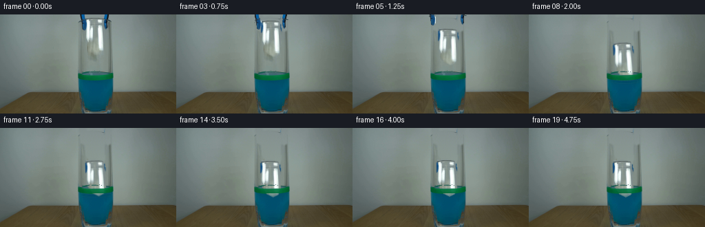
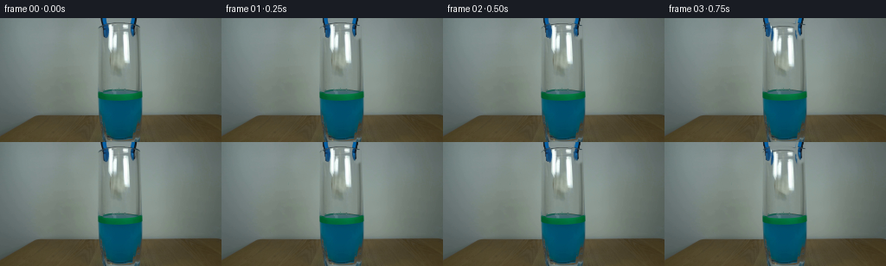

CODING AGENTS AS PIXEL WORLD MODELS
traex/GPT-5.6-Sol · 0137
点击播放 · 原生 RGB 像素
逐轮保存的候选
回放视频、检查图与代码变化。
每份候选均可单独播放。实际图片检查记录在下方工具轨迹中。
候选 01播放与检查图
点击播放 · 原生 RGB 像素


展开代码变化
--- 上一保存版本
+++ 本次保存版本
@@ -0,0 +1,170 @@
+from pathlib import Path
+import cv2
+import numpy as np
+from PIL import Image
+import artifact_io
+
+# Deterministic, small-scale photographic compositing of the objects already in
+# the supplied plate. No assets other than the first frame are used.
+ROOT = Path(__file__).resolve().parent
+plate = np.asarray(Image.open(ROOT / "first_frame.png").convert("RGB"), dtype=np.uint8)
+H, W = plate.shape[:2]
+
+
+def make_empty_plate(src):
+ """Remove the suspended paper and the upper ends of the tongs.
+
+ The wall behind this area is nearly textureless but has a horizontal light
+ gradient. Fit that gradient independently on every scanline and retain a
+ little of the plate's real sensor texture. This gives a more natural fill
+ than a single painted colour, especially at the top border.
+ """
+ out = src.astype(np.float32).copy()
+ yy, xx = np.mgrid[0:H, 0:W]
+ # Samples immediately to either side have the same wall illumination.
+ xs = np.r_[np.arange(91, 111), np.arange(166, 187)]
+ synthesis = np.zeros((H, W, 3), np.float32)
+ for y in range(H):
+ for c in range(3):
+ # A line is deliberately preferred to a high order fit: no ringing.
+ p = np.polyfit(xs, src[y, xs, c].astype(np.float32), 1)
+ synthesis[y, :, c] = np.polyval(p, np.arange(W))
+ # Recycle only the very low amplitude photographic grain from a clear
+ # part of this same row.
+ smooth = cv2.GaussianBlur(src[y:y+1, 70:107].astype(np.float32), (9, 1), 0)
+ grain = src[y:y+1, 70:107].astype(np.float32) - smooth
+ synthesis[y, 108:166] += np.resize(grain, (1, 58, 3))[0]
+
+ # Irregular silhouettes, expanded enough to include their antialiased rims.
+ paper_poly = np.array([
+ [124, 4], [136, 3], [147, 5], [151, 10], [152, 19],
+ [151, 31], [152, 45], [149, 53], [141, 57], [133, 53],
+ [128, 46], [124, 38], [123, 24], [123, 12]
+ ], np.int32)
+ remove = np.zeros((H, W), np.uint8)
+ cv2.fillPoly(remove, [paper_poly], 255)
+ # Blue-black opposing jaws/shafts entering through the top of frame.
+ cv2.fillPoly(remove, [np.array([[114,0],[125,0],[126,21],[123,25],[116,21]],np.int32)], 255)
+ cv2.fillPoly(remove, [np.array([[151,0],[162,0],[161,22],[156,25],[151,20]],np.int32)], 255)
+ remove = cv2.GaussianBlur(remove, (5,5), 0).astype(np.float32) / 255.0
+ # Do not alter the glass or level marker lower down.
+ remove[59:] = 0
+ out = out * (1-remove[...,None]) + synthesis * remove[...,None]
+ return np.clip(out, 0, 255).astype(np.uint8), paper_poly
+
+
+clean, paper_poly = make_empty_plate(plate)
+
+# Exact source material for the real crumpled paper. The alpha follows an
+# intentionally uneven, folded outline rather than a rectangle.
+paper_rgba = np.zeros((H, W, 4), np.uint8)
+paper_rgba[..., :3] = plate
+pmask = np.zeros((H, W), np.uint8)
+cv2.fillPoly(pmask, [paper_poly], 255)
+pmask = cv2.GaussianBlur(pmask, (3,3), .55)
+paper_rgba[..., 3] = pmask
+
+# Derive alpha for each tong directly from its strong blue-black colour. The
+# hand-painted support polygons retain dark antialiased edges as well.
+tool_parts = []
+for x0, x1, side in [(112,127,-1), (149,163,1)]:
+ crop = plate[0:28, x0:x1].copy()
+ base = clean[0:28, x0:x1]
+ dist = np.sqrt(((crop.astype(np.float32)-base.astype(np.float32))**2).sum(2))
+ r,g,b = crop[...,0],crop[...,1],crop[...,2]
+ chroma = (b.astype(np.int16)-r.astype(np.int16)>20) & (b.astype(np.int16)-g.astype(np.int16)>5)
+ dark = crop.mean(2) < 65
+ a = ((dist > 15) & (chroma | dark)).astype(np.uint8)*255
+ a = cv2.morphologyEx(a, cv2.MORPH_CLOSE, np.ones((3,3),np.uint8))
+ a = cv2.GaussianBlur(a, (3,3), .5)
+ rgba = np.dstack([crop, a])
+ tool_parts.append((rgba, x0, side))
+
+
+def over(dst, rgba, x, y, tint_underwater=False, surface=93):
+ """Alpha composite a possibly partially out-of-frame RGBA patch."""
+ ph,pw = rgba.shape[:2]
+ xa,ya=max(0,x),max(0,y); xb,yb=min(W,x+pw),min(H,y+ph)
+ if xa>=xb or ya>=yb: return
+ sx,sy=xa-x,ya-y
+ q=rgba[sy:sy+yb-ya, sx:sx+xb-xa].astype(np.float32)
+ if tint_underwater:
+ gy=np.arange(ya,yb)[:,None]
+ # Gradual wetting below the surface: retain folds while taking on the
+ # blue-green colour of the liquid.
+ wet=np.clip((gy-surface)/17.0,0,.62)[...,None]
+ water=np.zeros_like(q[...,:3]); water[:]=[18,91,116]
+ q[...,:3]=q[...,:3]*(1-wet)+water*wet
+ q[...,3:4] *= (1-.14*wet)
+ a=q[...,3:4]/255.0
+ dst[ya:yb,xa:xb] = np.clip(dst[ya:yb,xa:xb]*(1-a)+q[...,:3]*a,0,255)
+
+
+def transformed_paper(dy, angle, squeeze=1.0, dx=0):
+ # Transform around the paper's own centre while keeping a full-frame RGBA
+ # canvas, so its original photographic wrinkles stay perfectly registered.
+ cx,cy=138.0,30.0
+ M=cv2.getRotationMatrix2D((cx,cy), angle, squeeze)
+ M[:,2] += (dx,dy)
+ return cv2.warpAffine(paper_rgba, M, (W,H), flags=cv2.INTER_LINEAR,
+ borderMode=cv2.BORDER_CONSTANT, borderValue=(0,0,0,0))
+
+
+frames=[]
+# Real-time trajectory: short hold, accelerating drop, impact, then damped
+# buoyant bobbing. Values are in source pixels at 4 fps.
+dys = [0,0,1,4,9,16,24,31,36,39,41,42,42,43,43,42,42,43,43,43]
+angles = [0,0,0,-.6,.8,-1.3,1.5,-1.0,2.0,3.3,2.4,1.4,.6,-.1,-.5,-.3,.1,.3,.15,0]
+dxs = [0,0,0,0,0,1,0,-1,0,1,1,1,0,0,-1,-1,-1,-1,-1,-1]
+
+for i in range(20):
+ if i == 0:
+ frames.append(plate.copy())
+ continue
+ f=clean.astype(np.float32).copy()
+
+ # The jaws separate visibly before retracting upward out of the locked shot.
+ if i <= 8:
+ opening = [0,0,1,3,5,6,6,6,6][i]
+ rise = [0,0,0,1,3,7,12,18,25][i]
+ for rgba,x0,side in tool_parts:
+ over(f, rgba, int(x0 + side*opening), -rise)
+
+ # A slight non-rigid-looking compression on first contact with the liquid.
+ squeeze = 1.0 if i < 8 else [0.99,.98,.975,.98,.985,.99,.995,1,1,1,1,1][min(i-8,11)]
+ moving = transformed_paper(dys[i], angles[i], squeeze, dxs[i])
+ over(f, moving, 0, 0, tint_underwater=(i>=8), surface=92)
+
+ # Impact ripples are short-lived and confined to the glass interior. Paint
+ # only outside the paper silhouette to preserve the source detail.
+ if 7 <= i <= 13:
+ strength=(1-abs(i-9)/5.0)
+ ripple=np.zeros((H,W,4),np.uint8)
+ widths=[10+3*(i-7), 18+2*(i-7)]
+ for k,rw in enumerate(widths):
+ col=(73,139,145, int(80*strength/(k+1)))
+ cv2.ellipse(ripple,(139,94+k*3),(rw,2+k),0,190,350,col,1,cv2.LINE_AA)
+ cv2.ellipse(ripple,(139,94+k*3),(rw,2+k),0,10,170,col,1,cv2.LINE_AA)
+ # no ripple beyond the inside walls
+ ripple[:,:114,3]=0; ripple[:,164:,3]=0
+ # suppress on top of opaque paper
+ ripple[...,3]=(ripple[...,3].astype(np.float32)*(1-moving[...,3]/255.0)).astype(np.uint8)
+ over(f,ripple,0,0)
+
+ # The opaque green level band lies on the near wall of the glass and must
+ # correctly occlude an object falling behind it. Reapply only its strongly
+ # green pixels, preserving all surrounding glass shading.
+ if i >= 7:
+ band = plate[82:95,111:166]
+ r,g,b=band[...,0],band[...,1],band[...,2]
+ bm=((g.astype(np.int16)>r.astype(np.int16)+22) &
+ (g.astype(np.int16)>b.astype(np.int16)+5)).astype(np.uint8)*235
+ brgba=np.dstack([band,cv2.GaussianBlur(bm,(3,3),.4)])
+ over(f,brgba,111,82)
+
+ frames.append(np.clip(f,0,255).astype(np.uint8))
+
+frames=np.stack(frames)
+assert frames.shape == (20,144,256,3) and frames.dtype == np.uint8
+assert np.array_equal(frames[0],plate)
+artifact_io.save(frames, ROOT)
可观测工具轨迹
实际执行的命令与返回图片。
命令 1exit 0
/bin/bash -lc "cat GENERATION_RULES.md && printf '\\n---PROMPT---\\n' && cat prompt.txt"
命令 2exit 0
/bin/bash -lc "find . -maxdepth 2 -type f -printf '%p %s bytes\\n' | sort && python3 - <<'PY'
from PIL import Image
im=Image.open('first_frame.png')
print(im.mode, im.size)
PY"命令 3exit 0
/bin/bash -lc "python3 - <<'PY'
import cv2, numpy as np
im=cv2.imread('first_frame.png')[:,:,::-1]
# kmeans colors
x=im.reshape(-1,3).astype(np.float32)
crit=(cv2.TERM_CRITERIA_EPS+cv2.TERM_CRITERIA_MAX_ITER,100,.1)
_,lab,cen=cv2.kmeans(x,16,None,crit,10,cv2.KMEANS_PP_CENTERS)
counts=np.bincount(lab.ravel(),minlength=16)
for n,c in sorted(zip(counts,cen.astype(int).tolist()),reverse=True): print(n,c)
# bounding masks useful
for name,m in [
('blue', (im[:,:,2]>im[:,:,0]*1.15)&(im[:,:,2]>im[:,:,1]*1.05)&(im[:,:,2]>70)),
('green',(im[:,:,1]>im[:,:,0]*1.15)&(im[:,:,1]>im[:,:,2]*1.1)&(im[:,:,1]>60)),
('dark',(im.mean(2)<60)),
('paper',(im.mean(2)>135)&(im.max(2)-im.min(2)<55)),
]:
y,x=np.where(m); print(name,len(x), (x.min(),y.min(),x.max(),y.max()) if len(x) else '')
# regions means grid
for y in range(0,144,12):
print(' '.join('%3d'%im[y:y+12,x:x+16].mean() for x in range(0,256,16)))
PY"命令 4exit 0
/bin/bash -lc "python3 - <<'PY'
import cv2,numpy as np
im=cv2.imread('first_frame.png')[:,:,::-1]
# ASCII 4x4 tiles by semantic dominant pixel; ranges
chars=[]
for y in range(0,144,4):
s=''
for x in range(0,256,4):
a=im[y:y+4,x:x+4]; r,g,b=np.median(a.reshape(-1,3),0); br=(r+g+b)/3
if b>r*1.25 and b>g*1.05 and b>70: c='B'
elif g>r*1.2 and g>b*1.05 and g>60:c='G'
elif br<35:c='#'
elif br<65:c='D'
elif br<95:c='d'
elif br<130:c='o'
elif br<165:c='p'
elif br<200:c='.'
else:c=' '
s+=c
print(f'{y:3} {s}')
PY"命令 5exit 0
/bin/bash -lc "python3 - <<'PY'
from PIL import Image
import numpy as np
im=np.array(Image.open('first_frame.png'))
# crop x90:180, y0:144, each 2x2 median classes
for y in range(0,144,2):
s=''
for x in range(90,180,2):
r,g,b=np.median(im[y:y+2,x:x+2].reshape(-1,3),0); v=(r+g+b)/3
# exact nuanced categories
if b>r*1.5 and b>g*1.12 and b>55: c='B'
elif b>r*1.25 and b>g*1.03 and b>55:c='b'
elif g>r*1.3 and g>b*1.08 and g>45:c='G'
elif g>r*1.15 and g>b*1.02 and g>45:c='g'
elif v<30:c='#'
elif v<55:c='D'
elif v<80:c='d'
elif v<105:c='o'
elif v<135:c='p'
elif v<165:c='.'
elif v<205:c='+'
else:c=' '
s+=c
print(f'{y:03d}|{s}|')
PY"命令 6exit 0
/bin/bash -lc "python3 - <<'PY'
import cv2,numpy as np
im=cv2.imread('first_frame.png')
g=cv2.cvtColor(im,cv2.COLOR_BGR2GRAY)
# Canny line contours within central
ed=cv2.Canny(g,40,100)
n, lab, st, cen=cv2.connectedComponentsWithStats(ed)
for i in np.argsort(st[:,4])[::-1][:30]:
x,y,w,h,a=st[i]; print(i,'bbox',x,y,w,h,'area',a,'center',cen[i].round(1))
# selected RGB samples
im=im[:,:,::-1]
for y in [0,5,10,20,30,40,50,60,70,80,84,88,92,96,100,108,116,124,132,140]:
print('\\ny',y)
for x in range(105,176,5): print(x,tuple(im[y,x]),end=';')
PY"命令 7exit 0
/bin/bash -lc "python3 - <<'PY'
import cv2,numpy as np
im=cv2.imread('first_frame.png')[:,:,::-1].astype(float)
# row bg linear fit from outer regions x70:108 and170:205 per channel
pred=np.zeros_like(im)
for y in range(144):
xs=np.r_[70:108,170:205]
for c in range(3):
cf=np.polyfit(xs,im[y,xs,c],2)
pred[y,:,c]=np.polyval(cf,np.arange(256))
d=np.linalg.norm(im-pred,axis=2)
m=(d>22).astype('uint8'); m[:, :108]=0;m[:,168:]=0;m[83:]=0
n,lab,st,cen=cv2.connectedComponentsWithStats(m)
for i in np.argsort(st[:,4])[::-1][:20]: print(i,st[i],cen[i], 'diffavg',d[lab==i].mean())
# ASCII central diff
for y in range(0,84,2):
s=''
for x in range(105,171,2):
v=np.median(d[y:y+2,x:x+2])
s += '#' if v>80 else 'X' if v>40 else '+' if v>20 else '.'
print(f'{y:02}|{s}|')
PY"命令 8exit 0
/bin/bash -lc 'cat artifact_io.py'
命令 9exit 0
/bin/bash -lc "python3 - <<'PY'
import cv2,numpy as np
im=cv2.imread('first_frame.png')[:,:,::-1]
for th in [150,165,180,195,210,225,240]:
m=(im.mean(2)>th).astype('uint8');m[:,:110]=0;m[:,165:]=0;m[60:]=0
n,l,s,c=cv2.connectedComponentsWithStats(m)
print('\\nth',th)
for i in np.argsort(s[:,4])[::-1][1:8]: print(s[i],c[i])
# print brightness and saturation grid central in chars every pixel? x120:160 y0:60, 1 px chars where > thresholds
v=im.mean(2)
for y in range(60):
s=''
for x in range(110,165):
z=v[y,x]
s += ' ' if z>225 else '+' if z>190 else '.' if z>155 else 'p' if z>125 else 'o' if z>95 else 'd' if z>65 else 'D' if z>35 else '#'
print(f'{y:02d}{s}')
PY"命令 10exit 0
/bin/bash -lc "python3 - <<'PY'
from PIL import Image
import numpy as np
im=np.array(Image.open('first_frame.png'))
for y in range(74,90):
print('\\ny=',y)
for x in range(110,166):
r,g,b=im[y,x]
print(f'{x}:{r:02x}{g:02x}{b:02x}',end=' ')
if (x-109)%8==0: print()
PY"命令 11exit 0
/bin/bash -lc "cat > generate.py <<'PY'
from pathlib import Path
import cv2
import numpy as np
from PIL import Image
import artifact_io
# Deterministic, small-scale photographic compositing of the objects already in
# the supplied plate. No assets other than the first frame are used.
ROOT = Path(__file__).resolve().parent
plate = np.asarray(Image.open(ROOT / \"first_frame.png\").convert(\"RGB\"), dtype=np.uint8)
H, W = plate.shape[:2]
def make_empty_plate(src):
\"\"\"Remove the suspended paper and the upper ends of the tongs.
The wall behind this area is nearly textureless but has a horizontal light
gradient. Fit that gradient independently on every scanline and retain a
little of the plate's real sensor texture. This gives a more natural fill
than a single painted colour, especially at the top border.
\"\"\"
out = src.astype(np.float32).copy()
yy, xx = np.mgrid[0:H, 0:W]
# Samples immediately to either side have the same wall illumination.
xs = np.r_[np.arange(91, 111), np.arange(166, 187)]
synthesis = np.zeros((H, W, 3), np.float32)
for y in range(H):
for c in range(3):
# A line is deliberately preferred to a high order fit: no ringing.
p = np.polyfit(xs, src[y, xs, c].astype(np.float32), 1)
synthesis[y, :, c] = np.polyval(p, np.arange(W))
# Recycle only the very low amplitude photographic grain from a clear
# part of this same row.
smooth = cv2.GaussianBlur(src[y:y+1, 70:107].astype(np.float32), (9, 1), 0)
grain = src[y:y+1, 70:107].astype(np.float32) - smooth
synthesis[y, 108:166] += np.resize(grain, (1, 58, 3))[0]
# Irregular silhouettes, expanded enough to include their antialiased rims.
paper_poly = np.array([
[124, 4], [136, 3], [147, 5], [151, 10], [152, 19],
[151, 31], [152, 45], [149, 53], [141, 57], [133, 53],
[128, 46], [124, 38], [123, 24], [123, 12]
], np.int32)
remove = np.zeros((H, W), np.uint8)
cv2.fillPoly(remove, [paper_poly], 255)
# Blue-black opposing jaws/shafts entering through the top of frame.
cv2.fillPoly(remove, [np.array([[114,0],[125,0],[126,21],[123,25],[116,21]],np.int32)], 255)
cv2.fillPoly(remove, [np.array([[151,0],[162,0],[161,22],[156,25],[151,20]],np.int32)], 255)
remove = cv2.GaussianBlur(remove, (5,5), 0).astype(np.float32) / 255.0
# Do not alter the glass or level marker lower down.
remove[59:] = 0
out = out * (1-remove[...,None]) + synthesis * remove[...,None]
return np.clip(out, 0, 255).astype(np.uint8), paper_poly
clean, paper_poly = make_empty_plate(plate)
# Exact source material for the real crumpled paper. The alpha follows an
# intentionally uneven, folded outline rather than a rectangle.
paper_rgba = np.zeros((H, W, 4), np.uint8)
paper_rgba[..., :3] = plate
pmask = np.zeros((H, W), np.uint8)
cv2.fillPoly(pmask, [paper_poly], 255)
pmask = cv2.GaussianBlur(pmask, (3,3), .55)
paper_rgba[..., 3] = pmask
# Derive alpha for each tong directly from its strong blue-black colour. The
# hand-painted support polygons retain dark antialiased edges as well.
tool_parts = []
for x0, x1, side in [(112,127,-1), (149,163,1)]:
crop = plate[0:28, x0:x1].copy()
base = clean[0:28, x0:x1]
dist = np.sqrt(((crop.astype(np.float32)-base.astype(np.float32))**2).sum(2))
r,g,b = crop[...,0],crop[...,1],crop[...,2]
chroma = (b.astype(np.int16)-r.astype(np.int16)>20) & (b.astype(np.int16)-g.astype(np.int16)>5)
dark = crop.mean(2) < 65
a = ((dist > 15) & (chroma | dark)).astype(np.uint8)*255
a = cv2.morphologyEx(a, cv2.MORPH_CLOSE, np.ones((3,3),np.uint8))
a = cv2.GaussianBlur(a, (3,3), .5)
rgba = np.dstack([crop, a])
tool_parts.append((rgba, x0, side))
def over(dst, rgba, x, y, tint_underwater=False, surface=93):
\"\"\"Alpha composite a possibly partially out-of-frame RGBA patch.\"\"\"
ph,pw = rgba.shape[:2]
xa,ya=max(0,x),max(0,y); xb,yb=min(W,x+pw),min(H,y+ph)
if xa>=xb or ya>=yb: return
sx,sy=xa-x,ya-y
q=rgba[sy:sy+yb-ya, sx:sx+xb-xa].astype(np.float32)
if tint_underwater:
gy=np.arange(ya,yb)[:,None]
# Gradual wetting below the surface: retain folds while taking on the
# blue-green colour of the liquid.
wet=np.clip((gy-surface)/17.0,0,.62)[...,None]
water=np.zeros_like(q[...,:3]); water[:]=[18,91,116]
q[...,:3]=q[...,:3]*(1-wet)+water*wet
q[...,3:4] *= (1-.14*wet)
a=q[...,3:4]/255.0
dst[ya:yb,xa:xb] = np.clip(dst[ya:yb,xa:xb]*(1-a)+q[...,:3]*a,0,255)
def transformed_paper(dy, angle, squeeze=1.0, dx=0):
# Transform around the paper's own centre while keeping a full-frame RGBA
# canvas, so its original photographic wrinkles stay perfectly registered.
cx,cy=138.0,30.0
M=cv2.getRotationMatrix2D((cx,cy), angle, squeeze)
M[:,2] += (dx,dy)
return cv2.warpAffine(paper_rgba, M, (W,H), flags=cv2.INTER_LINEAR,
borderMode=cv2.BORDER_CONSTANT, borderValue=(0,0,0,0))
frames=[]
# Real-time trajectory: short hold, accelerating drop, impact, then damped
# buoyant bobbing. Values are in source pixels at 4 fps.
dys = [0,0,1,4,9,16,24,31,36,39,41,42,42,43,43,42,42,43,43,43]
angles = [0,0,0,-.6,.8,-1.3,1.5,-1.0,2.0,3.3,2.4,1.4,.6,-.1,-.5,-.3,.1,.3,.15,0]
dxs = [0,0,0,0,0,1,0,-1,0,1,1,1,0,0,-1,-1,-1,-1,-1,-1]
for i in range(20):
if i == 0:
frames.append(plate.copy())
continue
f=clean.astype(np.float32).copy()
# The jaws separate visibly before retracting upward out of the locked shot.
if i <= 8:
opening = [0,0,1,3,5,6,6,6,6][i]
rise = [0,0,0,1,3,7,12,18,25][i]
for rgba,x0,side in tool_parts:
over(f, rgba, int(x0 + side*opening), -rise)
# A slight non-rigid-looking compression on first contact with the liquid.
squeeze = 1.0 if i < 8 else [0.99,.98,.975,.98,.985,.99,.995,1,1,1,1,1][min(i-8,11)]
moving = transformed_paper(dys[i], angles[i], squeeze, dxs[i])
over(f, moving, 0, 0, tint_underwater=(i>=8), surface=92)
# Impact ripples are short-lived and confined to the glass interior. Paint
# only outside the paper silhouette to preserve the source detail.
if 7 <= i <= 13:
strength=(1-abs(i-9)/5.0)
ripple=np.zeros((H,W,4),np.uint8)
widths=[10+3*(i-7), 18+2*(i-7)]
for k,rw in enumerate(widths):
col=(73,139,145, int(80*strength/(k+1)))
cv2.ellipse(ripple,(139,94+k*3),(rw,2+k),0,190,350,col,1,cv2.LINE_AA)
cv2.ellipse(ripple,(139,94+k*3),(rw,2+k),0,10,170,col,1,cv2.LINE_AA)
# no ripple beyond the inside walls
ripple[:,:114,3]=0; ripple[:,164:,3]=0
# suppress on top of opaque paper
ripple[...,3]=(ripple[...,3].astype(np.float32)*(1-moving[...,3]/255.0)).astype(np.uint8)
over(f,ripple,0,0)
# The opaque green level band lies on the near wall of the glass and must
# correctly occlude an object falling behind it. Reapply only its strongly
# green pixels, preserving all surrounding glass shading.
if i >= 7:
band = plate[82:95,111:166]
r,g,b=band[...,0],band[...,1],band[...,2]
bm=((g.astype(np.int16)>r.astype(np.int16)+22) &
(g.astype(np.int16)>b.astype(np.int16)+5)).astype(np.uint8)*235
brgba=np.dstack([band,cv2.GaussianBlur(bm,(3,3),.4)])
over(f,brgba,111,82)
frames.append(np.clip(f,0,255).astype(np.uint8))
frames=np.stack(frames)
assert frames.shape == (20,144,256,3) and frames.dtype == np.uint8
assert np.array_equal(frames[0],plate)
artifact_io.save(frames, ROOT)
PY
python3 generate.py
python3 - <<'PY'
import numpy as np
from PIL import Image
fr=np.stack([np.array(Image.open(f'frames/{i:02}.png')) for i in range(20)])
print(fr.shape,fr.dtype,'frame0 exact',np.array_equal(fr[0],np.array(Image.open('first_frame.png'))))
for i in range(20):
d=np.abs(fr[i].astype(int)-fr[0].astype(int));
print(i, 'changed',np.any(d,2).sum(),'MAD',round(d.mean(),3),'bbox', end=' ')
y,x=np.where(np.any(d,2));print((x.min(),y.min(),x.max(),y.max()) if len(x) else None)
PY"保存候选 1 份；完成命令 11 次；可验证图片返回 0 张。原始 API 响应与完整日志保留在本地。